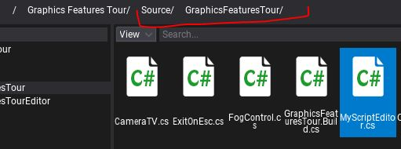
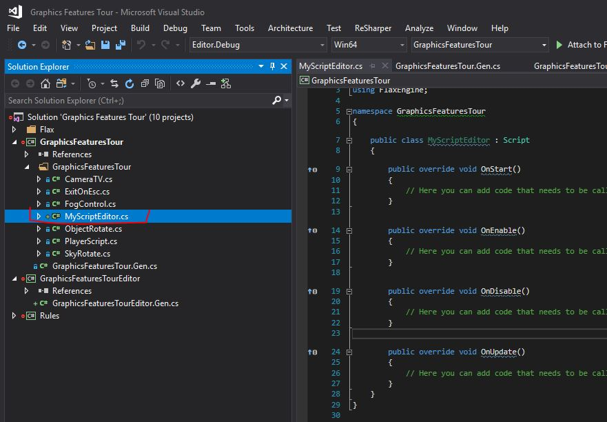
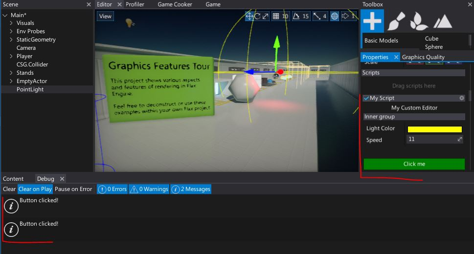

HOWTO: Create a custom editor
In this tutorial you will learn how to create a simple custom editor for the script. To learn more about Cutom Editors pipeline see related documentation page here.
1. Prepare a sample script (or use one from your game)
public class MyScript : Script
{
public float Speed = 11;
public Color LightColor = Color.Yellow;
public override void OnStart()
{
// Do something
}
}
2. Create editor script
Create a new C# script inside the Source/<module_name> directory and use the target class name with Editor postfix. Alternatively, you can use an additional editor-only scripts module as shown in tutorial here.

3. Open file
Double-click on created file to open it in code editor.

4. Implement the custom editor
Edit created class to inherit from GenericEditor. Add CustomEditor attribute that will tell Flax to use this type for editing MyScript objects. Implement the Initialize function which creates the editor layout. In the example below it inserts a label, creates a group with default editor inside and then adds a button after a small space.
#if FLAX_EDITOR
using FlaxEditor.CustomEditors;
using FlaxEditor.CustomEditors.Editors;
using FlaxEngine;
namespace GraphicsFeaturesTour
{
[CustomEditor(typeof(MyScript))]
public class MyScriptEditor : GenericEditor
{
public override void Initialize(LayoutElementsContainer layout)
{
layout.Label("My Custom Editor", TextAlignment.Center);
var group = layout.Group("Inner group");
base.Initialize(group);
layout.Space(20);
var button = layout.Button("Click me", Color.Green);
button.Button.Clicked += () => Debug.Log("Button clicked!");
}
}
}
#endif
If your script is in editor-only module then you can skip #if FLAX_EDITOR / #endif pair.
5. See the results
After Flax reloads the scripts, select the object with MyScript added and see the custom editor as shown in the picture below.

When clicking the button it prints "Button clicked!" in a Debug window, as expected.